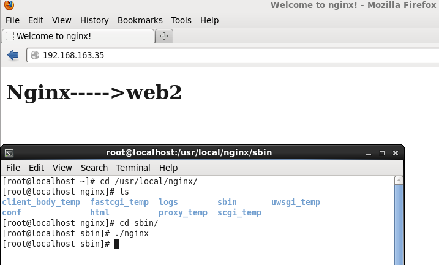
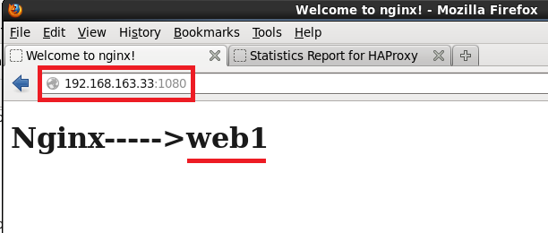
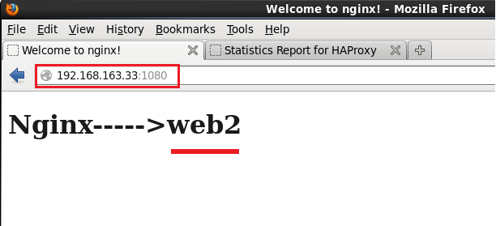
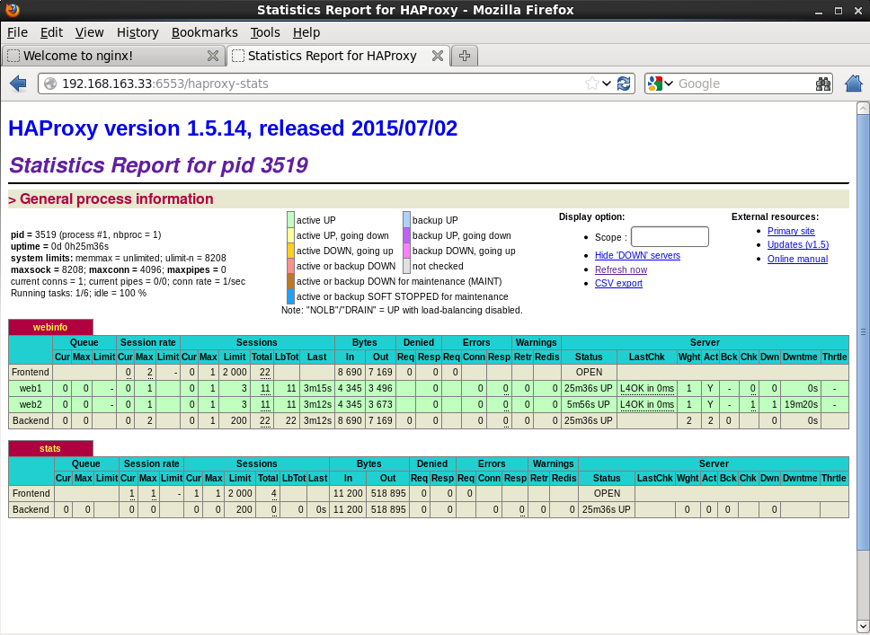
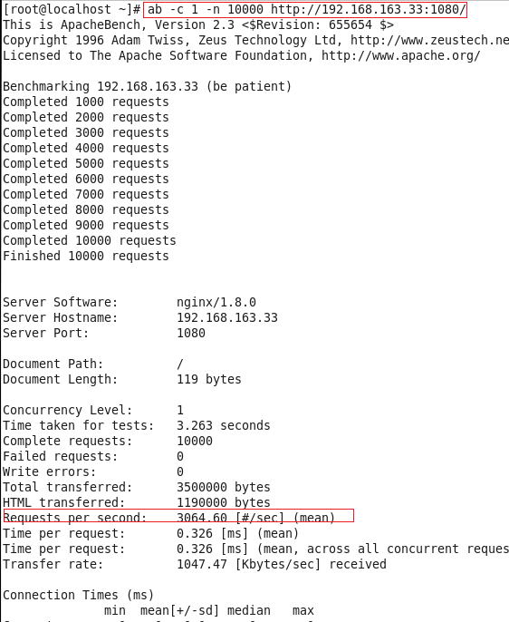
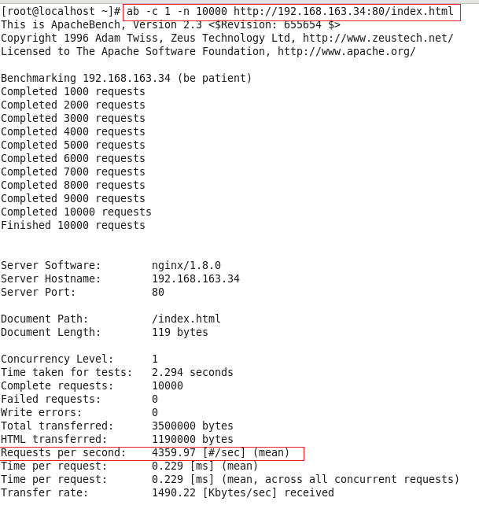

HAProxy提供高可用性、负载均衡以及基于TCP和HTTP应用的代理，支持虚拟主机，它是免费、快速并且可靠的一种解决方案。HAProxy特别适用于那些负载特大的web站点，这些站点通常又需要会话保持或七层处理。HAProxy运行在当前的硬件上，完全可以支持数以万计的并发连接。并且它的运行模式使得它可以很简单安全的整合进您当前的架构中， 同时可以保护你的web服务器不被暴露到网络上。
HAProxy实现了一种事件驱动, 单一进程模型，此模型支持非常大的并发连接数。多进程或多线程模型受内存限制 、系统调度器限制以及无处不在的锁限制，很少能处理数千并发连接。事件驱动模型因为在有更好的资源和时间管理的用户空间(User-Space) 实现所有这些任务，所以没有这些问题。此模型的弊端是，在多核系统上，这些程序通常扩展性较差。这就是为什么他们必须进行优化以 使每个CPU时间片(Cycle)做更多的工作。
wget http://www.haproxy.org/download/1.5/src/haproxy-1.5.14.tar.gz （在墙外）。
tar zxvf haproxy-1.5.14.tar.gz
uname -a # 查看linux内核版本
make TARGET=linux26 PREFIX=/usr/local/haproxy
make install PREFIX=/usr/local/haproxy
启动 haproxy [root@localhost sbin]# haproxy -f /etc/haproxy/haproxy.cfg
/etc/haproxy.cfg， haproxy的配置文件内容很多很灵活，以下只配置简单的一些内容。global
log 127.0.0.1 local0
log 127.0.0.1 local1 notice
#log loghost local0 info
maxconn 4096
chroot /var/haproxy
uid 99
gid 99
daemon
nbproc 1
#debug
#quiet
defaults
log global
mode http
option httplog
option dontlognull
retries 3
option redispatch # 自动重定向到健康机器
maxconn 2000
timeout check 2000ms # 检查超时
timeout connect 5000ms # 连接超时
timeout client 50000ms # 客户端连接超时
timeout server 50000ms # 服务端连接超时
listen webinfo :1080
mode http
balance roundrobin
stats uri /ha_status
option httpclose
option forwardfor
server web1 192.168.163.34:80 check weight 1 minconn 1 maxconn 3 check inter 40000
server web2 192.168.163.35:80 check weight 1 minconn 1 maxconn 3 check inter 40000
#配置控制台
listen stats :6553
mode http
transparent
stats uri / haproxy-stats
stats realm Haproxy \ statistic
stats auth admin:admin这里共有3台机器，IP分别是192.168.163.33,192.168.163.34,192.168.163.35 。
33这台机器装的是haproxy,34和35两台机器装的是nginx。
nginx的安装参考前一篇nginx安装

web1 192.168.163.34:80
web2 192.168.163.35:80


paproxy的控制台，参考haproxy.cfg里面的配置
http://192.168.163.33:6553/haproxy-stats

[root@localhost ~]# ab -c 1 -n 10000 http://192.168.163.33:1080/结果

[root@localhost ~]# ab -c 1 -n 10000 http://192.168.163.34:80/index.html结果

现在HAProxy的算法也非常多，并不比专业的F5/LVS算法少，常用的算法有如下8种：
balance roundrobin，表示简单的轮询，建议关注；
balance static-rr，表示根据权重，建议关注；
balance leastconn，表示最少连接者先处理，建议关注；
balance source，表示根据请求源IP，跟Nginx的ip_hash算法相似，建议关注；
balance uri，表示根据请求的URI；
balance url_param，表示根据请求的URl参数；
balance hdr(name)，表示根据HTTP请求头来锁定每一次HTTP请求；
balance rdp-cookie(name)，表示根据据cookie(name)来锁定并哈希每一次TCP请求。
http://blog.haohtml.com/archives/7959
http://www.open-open.com/lib/view/open1388290883344.html
https://tyr.so/haproxy.html
http://www.haproxy.org
30多岁老程序员码字不容易，且码且珍惜。欢迎大家留言,亦师亦友共同交流。长按下方二维码关注我的公众号。